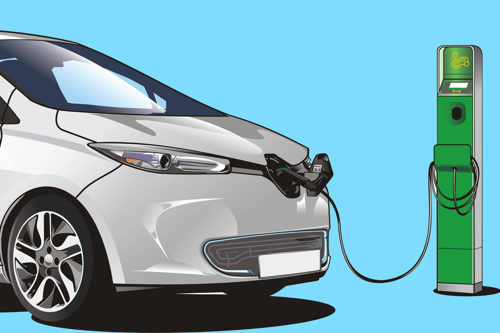

Stato in tempo reale
Colonnine di ricarica a Trento
Serie storica costruita interrogando periodicamente la Piattaforma Unica Nazionale (PUN). Dati generati offline dallo scraper, mai interrogati dal browser.
Ultimo aggiornamento
Foto: Francis Ray da Pixabay, via Comune di Trento.
Autostrada A22
Colonnine sul tracciato autostradale: pubblico di passaggio, diverso da quello cittadino, tenuto separato dalle statistiche di Trento.
Map view
Mappa in stile street con MapLibre
Dettaglio colonnine
Ultimo snapshot disponibile
| Stato | Operatore | Comune | Potenza | Connettori | Corrente | Indirizzo |
|---|